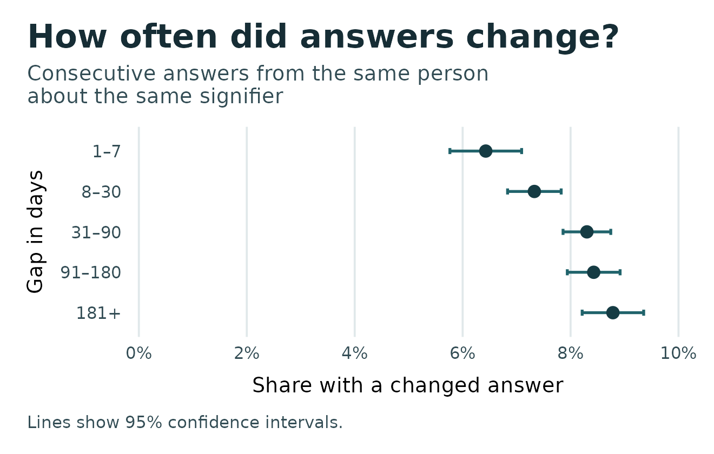

A daily study of the self
Answers changed more often after longer gaps

When people answered the same survey question again, their answers changed slightly more often after longer gaps. In Ipseity Daily, 6.4% of comparisons made 1–7 days apart showed a change, compared with 8.8% of those made 181 days or more apart. A similar pattern appeared when comparing shorter and longer gaps for the same person answering about the same word or phrase.
Comparing answers across sessions
Ipseity Daily asks U.S. adults whether words or phrases such as “trusting” describe them today. The project calls each of these words or phrases a signifier. The records span July 8, 2025, through November 26, 2026, and contain 804,340 answers from 5,516 respondents. Those answers cover 10,302 respondent-days. A respondent-day is a person’s participation on a particular date, whether they answered a few questions or many.
For each person and signifier, I put the recorded answers in date order and compared each answer with the previous one. A switch from Yes to No counted the same as a switch from No to Yes. The gap was the number of calendar days between those answers. A person could have taken other surveys in between, since the set of signifiers can vary and an unanswered question leaves no record for that signifier.
In all, 306,469 answers contributed to 210,827 comparisons, covering 6,503 respondent-days and 1,717 respondents. An answer in the middle of a sequence can be the end of one comparison and the start of the next. People who returned often and answered more of the same questions contributed more comparisons. Across all observed gaps, 7.8% of comparisons showed a change. The analysis included completed answers regardless of whether demographic information was available.
Changes by gap length
The dots in the figure show how often the answer changed in each range of days. The estimated rates rose across the ranges, with similar rates after 31–90 days (8.3%) and 91–180 days (8.4%). The difference between the longest and shortest gap ranges was 2.36 percentage points, with a 95% confidence interval of 1.63 to 3.08 points. The confidence intervals account for comparisons involving the same person, including comparisons about different signifiers.
People with longer gaps might answer a different mix of signifiers, and some people might give more consistent answers than others. To check whether the pattern appeared within the same person–signifier pairs, I used pairs with at least three recorded answers and gaps of different lengths. That gave 152,147 comparisons from 832 respondents. The model let each pair have its own baseline and estimated the average change in probability for each doubling of the gap, such as going from 15 to 30 days.
Within those pairs, a doubling of the gap corresponded to a 0.42 percentage point rise in the estimated chance of changing an answer. The 95% confidence interval ran from 0.35 to 0.50 points. Pooling those same comparisons gave a similar estimate of 0.43 percentage points per doubling, with an interval of 0.32 to 0.54 points. In the within-pair estimate, pairs with more comparisons and more variation in their gaps carry more weight.
What the gaps capture
The answers give a view of how people described themselves on the dates they were asked. Someone could switch to a different answer and back again between surveys. A change across recorded answers could reflect a shift in how someone sees themselves, how they read the word that day, or how they felt when they answered. The recorded gap gives the time between observations, while the timing of any change within that gap remains unknown.
Gap lengths depend both on when a person returned and on when the survey included the signifier again. A long gap can span different seasons, personal events, or different sets of survey questions. It also requires enough time for a follow-up before the snapshot ends, so people first observed near the end had fewer opportunities to contribute a long gap. Comparing the same person and signifier helps with differences that stay fixed across surveys, while circumstances can still change between sessions. The design leaves open whether the length of the gap itself influences answers.
These estimates describe comparisons among repeat Ipseity Daily respondents who answered the same questions again. Estimating how often answers change across all U.S. adults would require a sample designed to support that inference. Even across the longest observed gaps, keeping the earlier answer was by far the more common outcome.
Data from Ipseity Daily, released under CC BY 4.0.
Read the complete R analysis
#!/usr/bin/env Rscript
suppressPackageStartupMessages(library(tidyverse))
data_path <- Sys.getenv("IPSEITY_DATA_PATH", "data/ipseity.csv.gz")
demographic_fields <- c(
"age", "sex", "ethnicity", "birth_country", "residence_country",
"nationality", "language", "student", "employment"
)
expected_columns <- c(
"endorsed", "signifier", "observation_date", "hashed_respondent_id",
"demographics_status", demographic_fields, "time_on_task", "approvals"
)
responses <- suppressWarnings(read_csv(
data_path,
col_types = cols(
.default = col_character(),
endorsed = col_integer(),
observation_date = col_date(format = "%Y-%m-%d"),
age = col_double()
),
lazy = FALSE,
progress = FALSE
))
stopifnot(
"The CSV columns must match the documented schema" =
identical(names(responses), expected_columns),
"The CSV must parse without errors" = nrow(problems(responses)) == 0L,
"Answers must be Yes or No" = all(responses$endorsed %in% c(0L, 1L)),
"Dates and signifiers must be present" =
!anyNA(responses$observation_date) && all(nzchar(responses$signifier, keepNA = TRUE) %in% TRUE),
"Respondent grouping keys must be 12 hexadecimal characters" =
all(str_detect(responses$hashed_respondent_id, "^[[:xdigit:]]{12}$") %in% TRUE),
"Demographics status must use the documented labels" =
all(responses$demographics_status %in% c("available", "consent_revoked", "data_expired")),
"Revoked demographic values must be missing" =
all(is.na(responses[responses$demographics_status == "consent_revoked", demographic_fields])),
"Each respondent, date and signifier must occur at most once" =
n_distinct(responses$hashed_respondent_id, responses$observation_date,
responses$signifier) == nrow(responses)
)
gap_labels <- c("1–7", "8–30", "31–90", "91–180", "181+")
short_band <- first(gap_labels)
long_band <- last(gap_labels)
# After sorting, the previous row supplies a comparison only within the same pair.
transitions <- responses |>
select(hashed_respondent_id, signifier, observation_date, endorsed) |>
arrange(hashed_respondent_id, signifier, observation_date) |>
mutate(
same_pair = hashed_respondent_id == lag(hashed_respondent_id) &
signifier == lag(signifier),
previous_date = lag(observation_date),
changed = as.integer(endorsed != lag(endorsed))
) |>
filter(same_pair) |>
transmute(
hashed_respondent_id, signifier, observation_date, previous_date, changed,
gap_days = as.integer(observation_date - previous_date),
log_gap = log2(gap_days),
gap_band = cut(gap_days, c(0, 7, 30, 90, 180, Inf), labels = gap_labels)
)
stopifnot("All comparisons must span positive calendar gaps" = all(transitions$gap_days > 0L))
endpoint_days <- bind_rows(
transitions |> select(hashed_respondent_id, observation_date),
transitions |> transmute(hashed_respondent_id, observation_date = previous_date)
) |>
distinct()
repeated_pairs <- n_distinct(transitions$hashed_respondent_id, transitions$signifier)
endpoint_answers <- nrow(transitions) + repeated_pairs
# Each score is one respondent's contribution to an estimate. Use a cluster
# degrees-of-freedom correction and a t critical value for the 95% interval.
cluster_margin <- function(score) {
clusters <- length(score)
qt(0.975, df = clusters - 1L) * sqrt(clusters / (clusters - 1L) * sum(score^2))
}
respondent_band <- transitions |>
summarise(comparisons = n(), changes = sum(changed), .by = c(hashed_respondent_id, gap_band)) |>
mutate(
rate = sum(changes) / sum(comparisons),
score = (changes - rate * comparisons) / sum(comparisons),
.by = gap_band
)
band_rates <- respondent_band |>
summarise(
comparisons = sum(comparisons),
changes = sum(changes),
respondents = n(),
rate = first(rate),
margin = cluster_margin(score),
.by = gap_band
) |>
left_join(
transitions |>
summarise(later_days = n_distinct(hashed_respondent_id, observation_date), .by = gap_band),
by = "gap_band"
) |>
arrange(gap_band) |>
mutate(lower = rate - margin, upper = rate + margin)
stopifnot(
"Each gap band must support reporting" =
nrow(band_rates) == length(gap_labels) &&
all(band_rates$comparisons >= 50L & band_rates$respondents >= 20L)
)
long_minus_short <- band_rates$rate[band_rates$gap_band == long_band] -
band_rates$rate[band_rates$gap_band == short_band]
contrast_scores <- respondent_band |>
filter(gap_band %in% c(short_band, long_band)) |>
mutate(score = if_else(gap_band == long_band, score, -score)) |>
summarise(score = sum(score), .by = hashed_respondent_id)
contrast_margin <- cluster_margin(contrast_scores$score)
# A pair with varying gaps contains at least two comparisons. Centering both
# variables within each pair is equivalent to fitting a separate intercept for it.
within_pairs <- transitions |>
group_by(hashed_respondent_id, signifier) |>
filter(min(gap_days) < max(gap_days)) |>
mutate(within_gap = log_gap - mean(log_gap), within_change = changed - mean(changed)) |>
ungroup() |>
mutate(pooled_gap = log_gap - mean(log_gap), pooled_change = changed - mean(changed))
estimate_slope <- function(data, gap, change) {
sum_squares <- sum(data[[gap]]^2)
slope <- sum(data[[gap]] * data[[change]]) / sum_squares
respondent_scores <- data |>
summarise(
score = sum(.data[[gap]] * (.data[[change]] - slope * .data[[gap]])) / sum_squares,
.by = hashed_respondent_id
)
margin <- cluster_margin(respondent_scores$score)
c(estimate = slope, lower = slope - margin, upper = slope + margin)
}
pooled_slope <- estimate_slope(within_pairs, "pooled_gap", "pooled_change")
within_slope <- estimate_slope(within_pairs, "within_gap", "within_change")
count_text <- function(x) formatC(x, format = "d", width = 1L, big.mark = ",")
percent_text <- function(x) sprintf("%.1f%%", 100 * x)
effect_text <- function(estimate, lower, upper) {
sprintf("%.2f percentage points (95%% CI %.2f to %.2f)",
100 * estimate, 100 * lower, 100 * upper)
}
report <- c(
"Ipseity Daily (CC BY 4.0)",
sprintf("Observation dates: %s through %s", min(responses$observation_date), max(responses$observation_date)),
sprintf("Snapshot response observations: %s", count_text(nrow(responses))),
sprintf("Snapshot respondent-days: %s",
count_text(n_distinct(responses$hashed_respondent_id, responses$observation_date))),
sprintf("Snapshot unique respondents: %s", count_text(n_distinct(responses$hashed_respondent_id))),
"",
sprintf("Response observations contributing to comparisons: %s", count_text(endpoint_answers)),
sprintf("Respondent-days contributing to comparisons: %s", count_text(nrow(endpoint_days))),
sprintf("Unique respondents contributing to comparisons: %s",
count_text(n_distinct(transitions$hashed_respondent_id))),
sprintf("Repeated respondent–signifier pairs: %s", count_text(repeated_pairs)),
sprintf("Consecutive comparisons: %s", count_text(nrow(transitions))),
sprintf("Changed answers across comparisons: %s (%s)",
count_text(sum(transitions$changed)), percent_text(mean(transitions$changed))),
sprintf("Observed gap range: %d to %d days", min(transitions$gap_days), max(transitions$gap_days)),
"",
sprintf(
"%s days: %s comparisons, %s changes, %s later respondent-days, %s unique respondents. Change: %s (95%% CI %s to %s).",
band_rates$gap_band, count_text(band_rates$comparisons), count_text(band_rates$changes),
count_text(band_rates$later_days), count_text(band_rates$respondents),
percent_text(band_rates$rate), percent_text(band_rates$lower), percent_text(band_rates$upper)
),
sprintf(
"Longest minus shortest gap band: %s",
effect_text(long_minus_short, long_minus_short - contrast_margin, long_minus_short + contrast_margin)
),
"",
"Trend models use pairs with at least 2 comparisons (3 answers) and different gap lengths.",
sprintf("Comparisons in trend models: %s", count_text(nrow(within_pairs))),
sprintf("Respondent–signifier pairs in trend models: %s",
count_text(n_distinct(within_pairs$hashed_respondent_id, within_pairs$signifier))),
sprintf("Unique respondents in trend models: %s", count_text(n_distinct(within_pairs$hashed_respondent_id))),
sprintf("Example of doubling the gap: %d to %d days", 15L, 30L),
sprintf("Pooled change per doubling of gap, on the trend-model sample: %s",
effect_text(pooled_slope["estimate"], pooled_slope["lower"], pooled_slope["upper"])),
sprintf("Within-pair change per doubling of gap: %s",
effect_text(within_slope["estimate"], within_slope["lower"], within_slope["upper"])),
"All confidence intervals account for clustering by respondent."
)
figure <- ggplot(band_rates, aes(x = rate, y = fct_rev(gap_band))) +
geom_errorbar(aes(xmin = lower, xmax = upper), orientation = "y", width = 0.15,
linewidth = 0.9, colour = "#20636B") +
geom_point(size = 3.5, colour = "#153B43") +
scale_x_continuous(
breaks = scales::breaks_width(0.02),
labels = scales::label_percent(accuracy = 1),
limits = c(0, NA),
expand = expansion(mult = c(0.015, 0.08))
) +
labs(
title = "How often did answers change?",
subtitle = "Consecutive answers from the same person\nabout the same signifier",
x = "Share with a changed answer",
y = "Gap in days",
caption = "Lines show 95% confidence intervals."
) +
theme_minimal(base_size = 14) +
theme(
plot.title.position = "plot",
plot.caption.position = "plot",
plot.title = element_text(face = "bold", size = 22, colour = "#162D35"),
plot.subtitle = element_text(size = 14, colour = "#334D55", margin = margin(b = 13)),
axis.title.x = element_text(margin = margin(t = 10)),
axis.title.y = element_text(margin = margin(r = 9)),
axis.text = element_text(colour = "#334D55"),
panel.grid.minor = element_blank(),
panel.grid.major.y = element_blank(),
panel.grid.major.x = element_line(colour = "#E0E8EA"),
plot.caption = element_text(hjust = 0, colour = "#334D55", margin = margin(t = 13)),
plot.margin = margin(16, 20, 15, 18)
)
ggsave("visualization.png", figure, width = 6.6, height = 4.2, units = "in", dpi = 200, bg = "white")
writeLines(enc2utf8(report), "results.txt", useBytes = TRUE)
Original research prompt
Among repeated respondent–signifier observations, does a longer interval between sessions correspond to a greater chance of changing an answer?
Dataset SHA-256: 382b112a76c5ff3c6960646af004fa4640a9fb199e190f978b39eee88fe20702